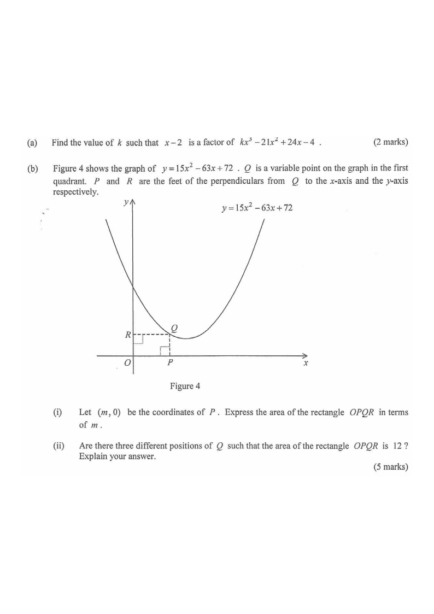

$y=15x^2-63x+72$ $Q$ on curve Rectangle $OPQR$ Area $=12$ level
HKDSE 2012 P1 Q13Functions & Graphs
Functions and Graphs — polynomial factor & optimisation
(a) Find the value of $k$ such that $x-2$ is a factor of $kx^{3}-21x^{2}+24x-4$.
(2 marks)
(b) Figure 4 shows the graph of $y=15x^{2}-63x+72$. $Q$ is a variable point on the graph in the first quadrant. $P$ and $R$ are the feet of the perpendiculars from $Q$ to the $x$-axis and the $y$-axis respectively.
(i) Let $(m,0)$ be the coordinates of $P$. Express the area of the rectangle $OPQR$ in terms of $m$.
(ii) Are there three different positions of $Q$ such that the area of the rectangle $OPQR$ is $12$? Explain your answer.
(5 marks)

Figure (original exam diagram)
1 Part (a) — Factor Theorem
Since $x-2$ is a factor, $f(2)=0$ where $f(x)=kx^{3}-21x^{2}+24x-4$:
\[ k(2)^{3}-21(2)^{2}+24(2)-4=0 \]
\[ 8k-84+48-4=0 \]
\[ 8k=40 \qquad\Longrightarrow\qquad k=5 \]
Hint: substitute $x=2$ into the polynomial and set the result to $0$.
2 Part (b)(i) — Coordinates of $Q$
$P=(m,0)$ and $Q$ lies on the curve, so
\[ Q=(m,\; 15m^{2}-63m+72). \]
Here $m>0$ and $Q$ is in the first quadrant, so $15m^{2}-63m+72>0$.
Hint: $Q$ is directly above $P$, so it shares the same $x$-coordinate.
3 Part (b)(i) — Area of $OPQR$
$OP=m$ and $OR=15m^{2}-63m+72$, so
\[ \text{Area}=OP\times OR=m(15m^{2}-63m+72) \]
\[ \boxed{\text{Area}=15m^{3}-63m^{2}+72m} \]
Hint: rectangle area $=$ width $\times$ height.
4 Part (b)(ii) — Set the area equal to $12$
\[ 15m^{3}-63m^{2}+72m=12 \]
Divide by $3$:
\[ 5m^{3}-21m^{2}+24m-4=0 \]
Hint: divide through to simplify before factorising.
5 Part (b)(ii) — Factorise
From (a), $x-2$ is a factor of $5x^{3}-21x^{2}+24x-4$. Dividing:
\[ 5m^{3}-21m^{2}+24m-4=(m-2)(5m^{2}-11m+2) \]
\[ =(m-2)(5m-1)(m-2)=(m-2)^{2}(5m-1)=0 \]
\[ \Longrightarrow\quad m=2 \quad\text{or}\quad m=\tfrac{1}{5} \]
Hint: the quadratic $5m^{2}-11m+2$ factorises as $(5m-1)(m-2)$.
6 Part (b)(ii) — Conclusion
There are only two values of $m$ (namely $m=2$ and $m=\tfrac{1}{5}$), giving two positions of $Q$. Therefore there are no three different positions of $Q$ with area $12$.
Hint: each valid $m$ gives exactly one point $Q$ on the curve.
Answer: (a) $k=5$ • (b)(i) $15m^{3}-63m^{2}+72m$ • (b)(ii) No — only two positions, $m=2$ and $m=\tfrac{1}{5}$.